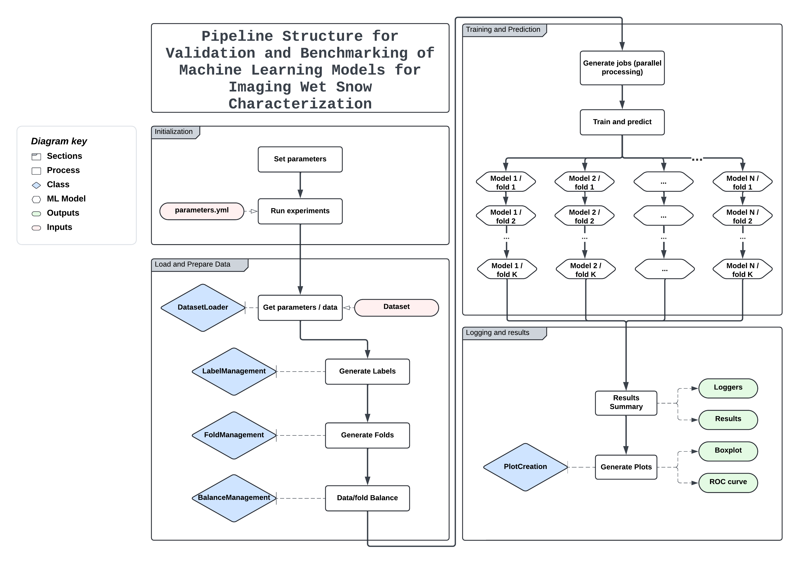

Usage
This framework is a versatile tool for studying and comparing different machine learning models with a focus on adaptability. Its modular design allows users to easily customize and extend functionality.
Main Components
`dataset_load` - Purpose: Manages the loading and preprocessing of datasets to prepare them for modeling. This module ensures that datasets are in a suitable format and structure for analysis. - Key Features:
Supports Various Data Formats: Handles common formats such as CSV, JSON, and Excel, allowing flexibility in data sources.
Initial Data Preparation: Includes functionalities for data cleaning, normalization, and transformation to handle missing values and ensure consistent data quality.
Integration with External Libraries: Compatible with libraries like Pandas for data manipulation and Scikit-learn for dataset handling.
Adaptability: The module is designed to be easily extendable to accommodate new data sources and preprocessing requirements. Users can add custom data loaders and transformation functions to fit specific needs.
`label_management` - Purpose: Generates and manages labels for the dataset based on user-defined conditions, crucial for supervised learning tasks. - Key Features:
Supports Binary and Multi-Class Labeling: Provides mechanisms for creating labels for binary classification, multi-class classification, and multi-label classification problems.
Label Encoding: Integrates with Scikit-learn’s encoding methods to convert categorical labels into numeric formats suitable for model training.
Custom Label Generation: Users can define custom rules and conditions for generating labels, allowing for flexible experimental designs.
Adaptability: Easily adjustable to various datasets and experimental goals. Users can define new labeling schemes and encoding strategies as needed.
`fold_management` - Purpose: Manages the splitting of data into training and testing sets using various cross-validation strategies to ensure robust model evaluation. - Key Features:
K-Fold Cross-Validation: Implements K-Fold cross-validation to evaluate model performance by dividing the dataset into K subsets and rotating which subset is used for testing.
Simple Splits: Provides methods for straightforward data splits based on a specified proportion of training and testing data.
Metadata-Based Combinations: Uses metadata to create more sophisticated train-test splits, including stratified and combination-based approaches.
Customizable Fold Generation: Allows users to define custom strategies for data splitting based on their experimental needs.
Adaptability: Flexible to different data structures and experimental requirements. Users can customize splitting strategies and incorporate additional metadata as needed.
`balance_management` - Purpose: Handles techniques for balancing datasets, particularly for cases where there is class imbalance, to ensure fair model training and evaluation. - Key Features:
Oversampling: Implements techniques like Random Oversampling and SMOTE (Synthetic Minority Over-sampling Technique) to increase the number of instances in minority classes.
Undersampling: Applies methods to reduce the number of instances in majority classes to achieve a more balanced dataset.
Class Balance Metrics: Provides metrics to evaluate the balance of classes before and after resampling.
Adaptability: Easily switch between different balancing strategies to fit various dataset characteristics and experimental goals. Users can also integrate new resampling methods as needed.
`figures` - Purpose: Focuses on visualizing results to facilitate the analysis and interpretation of model performance. - Key Features:
Customizable Plots: Generates a range of plots, including boxplots for metric distributions and ROC (Receiver Operating Characteristic) curves for model performance evaluation.
Performance Analysis: Provides visual tools to compare model performance across different metrics and folds, helping to identify strengths and weaknesses.
Plot Customization: Users can customize plot aesthetics, titles, and labels to suit their analysis needs.
Saving and Managing Plots: Allows for saving plots in specified directories for easy access and further analysis.
Adaptability: Facilitates the addition of new types of plots and visualizations. Users can define new plotting functions to support different analysis requirements and save them in designated directories.
Running the module SnowMark.py from the console can be quite complex due to the number of parameters required. Here is an example of how the command might look:
python evaluation/learning_models.py \
--data_path <data_path> \
--fold_method <fold_method> \
--labeling_method <labeling_method> \
--balancing_method <balancing_method> \
--request <request_condition> \
--shuffle_data <shuffle_data_boolean> \
--balance_data <balance_data_boolean> \
--import_list <import_statement1> \
--import_list <import_statement2> \
--pipeline <pipeline_step1> \
--pipeline <pipeline_step2> \
--pipeline <pipeline_step3> \
--metrics_to_report <metric1> \
--metrics_to_report <metric2> \
--metrics_to_report <metric3> \
--metrics_to_report <metric4> \
--seed <seed_value> \
--storage_path <storage_path>
This way we can only deploy one esperiment at a time or we can create a bash file to deploy multiple but it complexifies the results navigation.
To simplify this process, you can use Qanat. Qanat allows you to specify all parameters in a single YAML file. It then generates the appropriate command and deploys all the experiments for you.